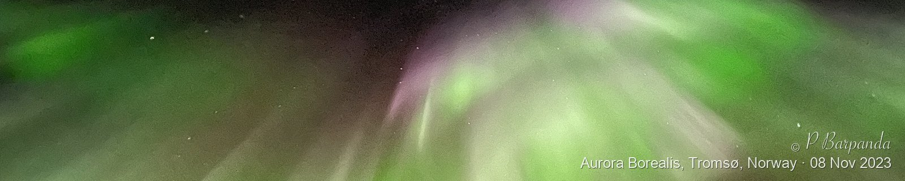

Banner / posteradd img/banner.jpg'">
Pragallva Barpanda
A seeker of simple answers to complex questions in climate science.
Hello! Thank you for stopping by.
I am a climate scientist and I use a physicist’s lens to study the fluid dynamics of Earth’s atmosphere. My research focuses on the wave–mean flow interaction of tropical and extratropical waves, midlatitude storm tracks, and extreme weather events in a warming climate.
I use large-scale climate data, experiment with climate models and develop pen-and-paper theory to tackle various questions pertaining to Earth’s weather in present and future climate.
Explore our latest work on heatwaves: A global atlas of heatwaves shows how blocking-driven heatwaves across the Northern Hemisphere are projected to change in a warmer world.
News
| Jul 2027 (Upcoming) | I will be speaking about ‘Local Wave Activity and its application’ at the ICTP Summer School on Theory, Mechanisms and Hierarchical Modelling of Climate Dynamics: Global Waves, Local Extremes, Trieste, Italy, 12–23 July 2027. Apply before 5 March 2027. |
|---|---|
| Apr 2027 (Upcoming) | We are convening the Rossby Wave and Jet Stream Dynamics session at the EGU General Assembly 2027, Vienna, 4–9 April 2027! Submit your abstract before 12 January 2027, 13:00 CET. |
| Nov 2026 | A global atlas of heatwaves is live now! This interactive atlas shows how blocking-driven heatwaves across the Northern Hemisphere are projected to change in a warmer world. |
| Jun 2026 | Colloquium, Institute of Atmospheric Physics, Johannes Gutenberg University Mainz. |
| Apr 2026 | Talk on the surface impacts of dynamically driven heatwaves at the Diabatics 2026 workshop, Wolkersdorf, Austria. |
Employment
| Jun 2026 – Present | Visiting Scientist, IMKTRO,
Karlsruhe Institute of Technology (KIT), Germany Host: Andreas Fink |
|---|---|
| Sep 2023 – May 2026 | Marie Curie Fellow, Geophysical Institute,
University of Bergen, and Bjerknes Centre for Climate Research, Norway Host: Camille Li |
| Sep 2020 – Aug 2023 | Postdoctoral Researcher, CIRES,
NOAA Physical Sciences Laboratory, Boulder, Colorado, USA Mentors: George Kiladis and Stefan Tulich |
Education
| 2015 – 2020 | PhD in Atmospheric Dynamics, The University of
Chicago, USA Thesis: Extratropical Storm Tracks Advisors: Tiffany Shaw and Noboru Nakamura |
|---|---|
| 2013 – 2015 | MSc in Physics, Indian Institute of Technology Kanpur, India |
| 2010 – 2013 | BSc in Physics, Miranda House, University of Delhi, India |
Selected Honors and Awards
| 2023 | Marie Skłodowska-Curie Actions Postdoctoral Fellowship, Horizon Europe (PI, grant amount: €226,750) |
|---|---|
| 2021 | Early Career Presentation Award, CLIVAR International Workshop on Mid-latitude Air–Sea Interaction |
| 2020 | Waitlist candidate, NOAA Climate and Global Change (C&GC) Postdoctoral Fellowship, USA |
| 2014 | Summer Research Fellowship, Indian Academy of Sciences |
| 2011 – 2015 | KVPY Fellowship (Young Scientist Incentive Scheme), Department of Science and Technology, Government of India |
| 2011 | Meera Singla Memorial Scholarship, for excellence in Mathematical Physics, University of Delhi, India |
Publications
Publications in reversed chronological order.
- Surface impacts of dynamically-driven heatwaves Submitted
- Projected future changes in atmospheric blocking and subtropical ridges and their link to European heatwaves in two SMILEs Submitted
- What controls the seasonality of poleward energy transport by intense extratropical cyclones? Journal of Geophysical Research: Atmospheres, 131, e2026JD047802 DOI
- Local wave activity analysis of atmospheric blocks in the Northern Hemisphere winter Journal of Climate, 38, 4653–4675 DOI
- The role of subtropical Rossby waves in amplifying the divergent circulation of the Madden–Julian Oscillation Journal of the Atmospheric Sciences, 80, 2377–2398 DOI
- Surface fluxes modulate the seasonality of zonal-mean storm tracks Journal of the Atmospheric Sciences, 77, 753–779 DOI
- Blocking statistics in a varying climate: lessons from a “traffic jam” model with pseudostochastic forcing Journal of the Atmospheric Sciences, 76, 3013–3027 DOI
- A moist static energy framework for zonal-mean storm-track intensity Journal of the Atmospheric Sciences, 75, 1979–1994 DOI
- Using the moist static energy budget to understand storm-track shifts across a range of time scales Journal of the Atmospheric Sciences, 74, 2427–2446 DOI